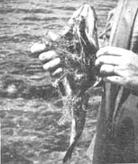
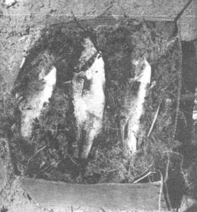

copyright © October, 1963 by SPORTS AFIELD Magazine
Wish you could bring home a few of those hard-fighting, bragging fish from that wilderness trip, or have a way to keep them edible for a couple of days in camp without the benefit of refrigeration or ice?
The swamps in most of the northern states and Canada can furnish you with the material necessary to keep your catch sweet and fresh for at least two or three days, depending on how well you took care of your fish right after landing them. The chief item of your "fish cooler" is sphagnum moss (peat moss), a gray-green moss that carpets nearly every swamp in the north country and can be picked in big, stringy handfuls with little effort. Five or ten minutes of picking should fill your gunnysack.
The fish should be kept alive, if possible, until you're ready to pack them or, at the very least, out of the sun if you keep them in the boat while fishing. Heat starts to deteriorate the flesh of fish almost immediately, and one bad fish in the pack will spoil them all in a short time.
To ready your fish for packing, clean them by cutting from the vent to the gill junction and remove the gills and entrails. Pay special attention to removing the blood along the spine area, as spoilage will start here first. Don't scale or cut off fins or heads; this outside armor helps to keep the fish fresh. Next put the fish in a pail of ice-cold pump or spring water to chill; then wash well, removing slime and any leftover blood along the spine. Next soak the moss in fresh, cold water, squeeze out and spread a three- or four-inch layer in the bottom of a paper box, carton, a square of tarpaulin or even your raincoat. Now stuff the body cavity of each fish with a handful of the cold moss. Pack the fish in layers so that they don't touch each other-this is important. Cover the first layer of fish with moss and repeat with subsequent layers until all the fish are packed. Keep package in the shade.
Fish packed this way will stand several hundred miles of travel by car in hot weather. If an extended trip is to be taken, however, a block of ice buried in the moss with the fish will keep them fresh for several days of hot-weather travel.
By the way, do not discard the moss; it can be put to several good uses around home. A three-gallon container filled with moss makes an ideal place to keep night crawlers and will keep a hundred of them in tip-top condition. Feed the crawlers once in a while with unsalted, cooked oatmeal to which a spoonful of cooking fat is added. Then, too, your wife may put the moss to good use in lining flower pots or window boxes. The moss has the ability to absorb 200 times its weight in water and will keep plants in good condition for long periods without watering. This same peat moss, when dried and ground, is used by professional gardeners. Because of its absorbent qualities, this moss can be used as a satisfactory dressing in place of cotton.
|
 After cleaning fish, chill them thoroughly in cold water. Then place a handful of sphagnum moss in each body cavity before packing. |
 The fish should not touch each other and should be shielded from the air by at least three inches of moss. Then pack in moss-separated layers. |
|